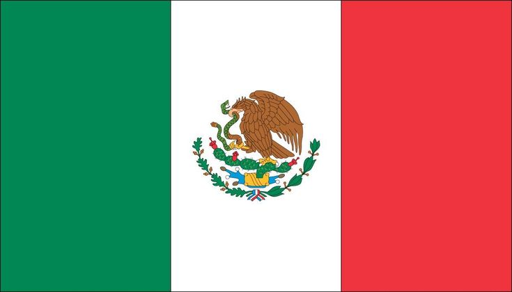

About Me
Josue Leyva is a bilingual professional with C1 English skills and a native Spanish background. With experience in customer service, teaching, and tech, he is driven by a passion for programming and building a career in the tech industry. Currently studying computer science at BYU-I, he values problem-solving, cross-cultural communication, and efficiency. Josue is eager to create impactful solutions and pursue success in tech and business.

Mexico boasts a strong and growing economy, driven by industries like manufacturing, energy, and technology. As one of Latin America’s largest economies, it holds a strategic trade position, especially with its U.S. and Canada partnerships. Trade agreements have boosted industrial growth and job creation. Additionally, Mexico’s tech and startup sectors are rapidly expanding, drawing investment and fostering innovation. With a skilled workforce and abundant resources, Mexico is well-positioned for continued economic resilience.